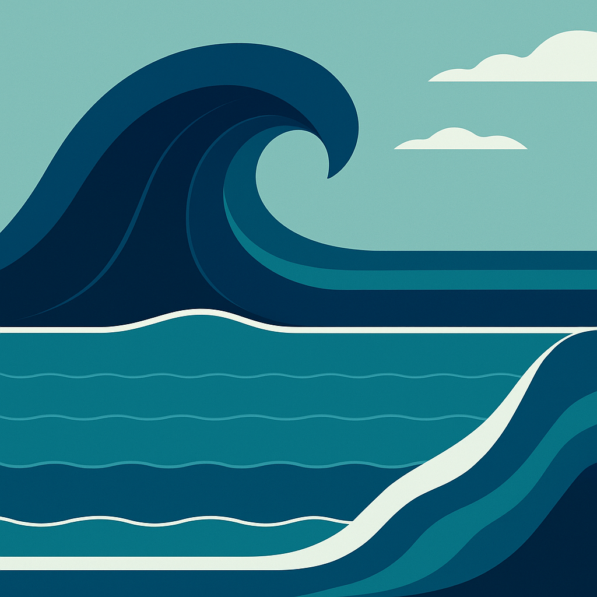
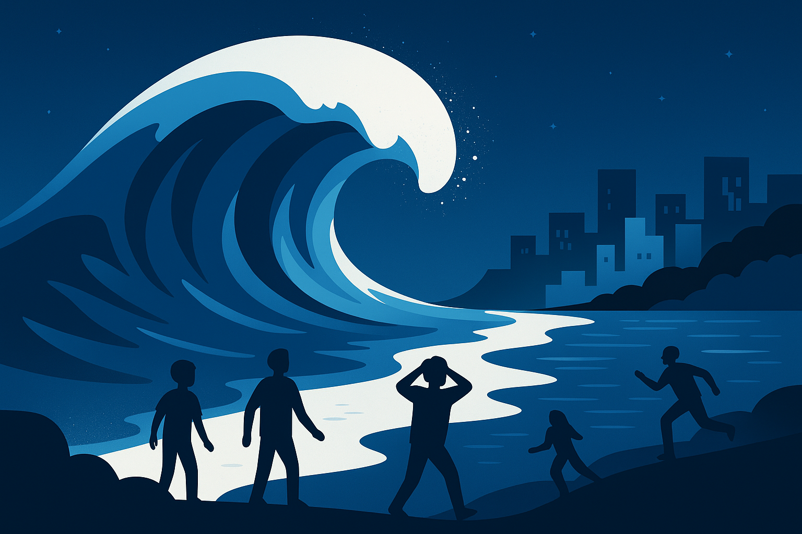
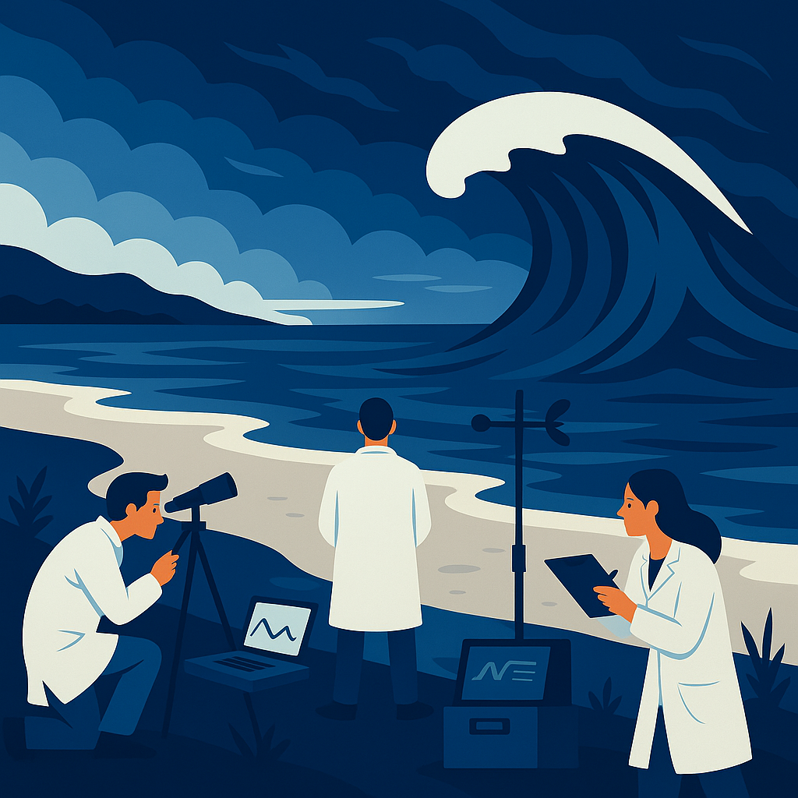

Nærkontakt
Lær hvordan du reagerer, når naturen pludselig vender sig. Denne guide giver dig konkrete råd til, hvordan du handler hurtigt og sikkert ved tegn på tsunami eller stormflod.
Få hurtig adgang til advarsler, retningslinjer og vigtig viden.
Lær hvordan du reagerer, når naturen pludselig vender sig. Denne guide giver dig konkrete råd til, hvordan du handler hurtigt og sikkert ved tegn på tsunami eller stormflod.
Din observation kan gøre en forskel. Ved at rapportere ændringer i vandstand eller usædvanlige bevægelser hjælper du beredskabet med at handle hurtigere.
Et kig under havets overflade afslører, hvordan en tsunami bliver til lag for lag. Det starter som et næsten usynligt tryk i dybet, men vokser til en kraft, der kan forandre alt på sin vej.
Når naturen rammer tilbage, minder den os om, hvor små vi egentlig er.
Mens naturen viser sin magt, står forskerne klar med sensorer, data og mod.
Hvor katastrofen starter Dybt under havoverfladen, hvor jordens plader mødes, kan et enkelt ryk frigive en enorm mængde energi. Det, der starter som et næsten usynligt skub i dybet, sætter vandmasser i bevægelse med ufattelig hast. Tsunamien fødes i stilhed – et tryk, der bevæger sig gennem oceanet hurtigere end et passagerfly.
Fra ro til rejst mur Ude på åbent hav mærker skibe sjældent noget. Men efterhånden som bølgen nærmer sig lavere vand, tvinges den opad. Den vokser, samler energi og forvandler sig fra en krusning til en mur af vand. Hver centimeter af havbunden, den rammer, forstærker dens kraft og form. Naturens fysiske præcision bliver pludselig synlig – og skræmmende.
Lagene i bevægelse En tsunami består af flere lag, som bevæger sig med forskellig hastighed. Vandet presser sig frem i rytmer, der minder om hjerteslag. Set ovenfra ligner det kaos – men i virkeligheden er det perfekt matematik. Bølgens styrke handler ikke om højden alene, men om dens dybde og energi.
Forståelsen som forsvar Hver gang forskere måler, simulerer og kortlægger disse bevægelser, bliver vi bedre til at varsle i tide. Viden kan ikke stoppe havet – men den kan redde liv. Jo mere vi forstår mekanikken bag, desto mere kontrol får vi i mødet med naturens uforudsigelige kræfter.
Stilheden før slaget Et øjebliks ro – havet trækker sig tilbage, fuglene forsvinder, og alt bliver stille. For de få, der står på stranden, føles det som et underligt åndedrag, inden naturen slår igen. Det er i denne stilhed, de fleste forstår, at noget er galt. Vandet forsvinder, men kraften samler sig.
Kampen mod naturens tempo Når bølgen rejser sig i horisonten, er der ingen forskel på rig og fattig, stærk eller svag. Alle reagerer på instinkt. Nogle løber, andre fryser. Bølgens styrke kan ikke stoppes, men dens hastighed kan beregnes – og det er dér, forskellen mellem liv og død findes.
Overlevelse og erkendelse Når naturen viser sin magt, bliver menneskets teknologi lille. Vi søger mod højder, improviserer og hjælper hinanden. Midt i kaos opstår øjeblikke af mod og medmenneskelighed, hvor samarbejde er det eneste værn mod vandets kræfter.
Efter bølgen Når vandet trækker sig tilbage, efterlader det mere end ødelæggelse. Det efterlader forståelse. Landskabet ændres, men også vores syn på naturen. Tsunamien minder os om, at vi ikke lever over naturen – men i den. Det er mørkets æstetik: ødelæggelse, der skaber respekt.
Data der redder liv Langs verdens kyster måler sensorer konstant havets bevægelser. Små udsving i tryk, strøm og temperatur registreres i realtid. Disse data danner grundlaget for al tidlig varsling – og hvert sekund tæller. Et varsel udsendt i tide kan redde tusinder.
Mennesker bag tallene Bag hver graf og hver rapport står forskere, som arbejder under ekstreme forhold. De installerer udstyr i stormvejr, sender droner ud over havet og holder øje med skærme nat og dag. De står bogstaveligt talt i stormens skygge – hvor viden og natur mødes.
Teknologien som allieret Satellitter, undervandsdroner og seismiske sensorer gør det muligt at spore bevægelser på få millimeter. Samarbejde mellem lande og organisationer sikrer, at data deles hurtigt. Videnskaben er blevet vores øjne i mørket – et globalt net af observationer, der konstant lærer nyt.
At lære af fortiden Efter hver tsunami samles erfaringerne: data, vidnesbyrd og reaktioner. Fejl bliver analyseret, systemer forbedres, og nye standarder skabes. Videnskaben forsøger ikke at kontrollere naturen – men at forstå den. Og netop dér ligger håbet.